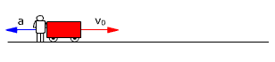
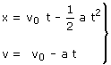
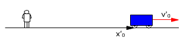
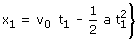
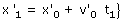
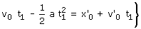
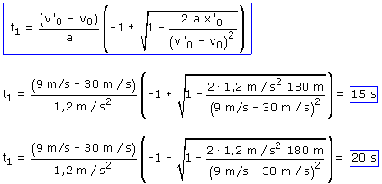
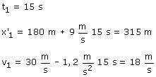
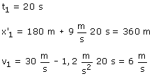

a)
Ecuaciones de los movimientos:
|  |
 |
Parámetros: v0 = 30 m/s, a = 1.2 m/s2 |
|  |
|
Parámetros: x'0 = 180 m, v'0 = 9 m/s |

En el instante t1 la posiciones de los trenes de viajeros y de mercancias serán:
 |
 |
Si se ha producido el choque las posiciones serán iguales: x1 = x'1
|
|
 |


Para interpretar estos resultados vamos a calcular el lugar del choque y la velocidad del tren de pasajeros correspondientes a cada tiempo

A los 15 s se produce un choque a 315 m del observador yendo el tren de viajeros a 18 m/s

A los 20 s se produciría otro choque a 360 m del observador yendo el tren de viajeros a 6 m/s
Evidentemente una vez que se produce el primer choque las
ecuaciones del movimiento dejan de ser validas y no tiene sentido la segunda
solución.
Pero vale la pena meditar el significado de la segunda solución.
Supongamos que los trenes van por vías paralelas y en lugar de
chocar simplemente se cruzan ¿como puede ser que se crucen dos
veces?.
Cuando se produce el primer cruce (t =15) el tren de viajeros va más deprisa que el tren de mercancías y le adelanta pero sigue frenando y el segundo cruce se produce (t = 20) cuando el mercancías, que no ha cambiado de velocidad, alcanza al tren de pasajeros.